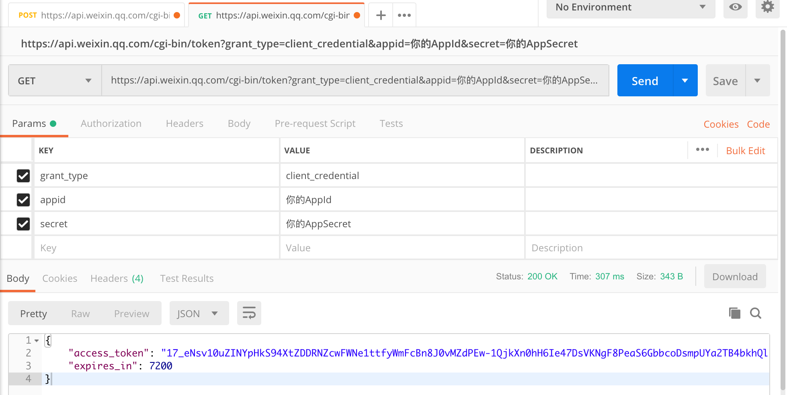
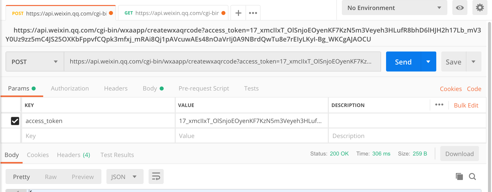
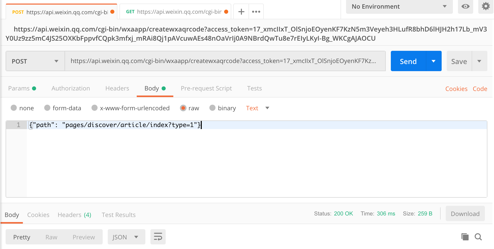
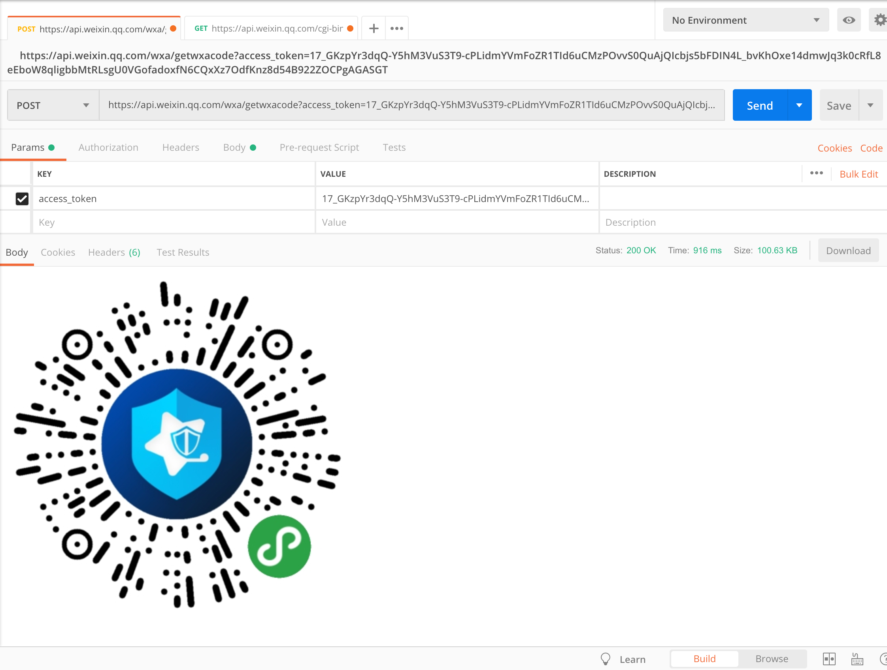

准备工作
- 确保页面路径存在app.json文件中
- 获取小程序的AppId和AppSecret
- 下载postman工具
开始获取
微信提供了「获取小程序二维码」的接口。
通过这个接口，商家和开发者能够制作进入不同页面的小程序二维码，而不会限定扫码进入小程序主页。
获取Access Token
利用postman工具根据准备的AppID和AppSecret，获取 Access Token。 使用get方式请求地址https://api.weixin.qq.com/cgi-bin/token，传入以下参数
1 | { |
点击Send出现图中所示则表示请求成功，其中access_token就是我们需要的值

获取二维码
微信提供了两个POST获取小程序二维码的接口
- 获取最新的「菊花式」小程序码，可以使用这个接口：
1 | https://api.weixin.qq.com/wxa/getwxacode?access_token=ACCESS_TOKEN。 |
- 获取经典的「狗皮膏药式」QR 码，可以使用这个接口：
1 | https://api.weixin.qq.com/cgi-bin/wxaapp/createwxaqrcode?access_token=ACCESS_TOKEN |
在postman中输入以上地址后需要修改POST请求体中的请求方式为raw, 并修改JSON请求体为
1 | {"path": "pages/discover/article/index?type=1"} |
最终配置如下


如果请求成功则会返回小程序的二维码图片
